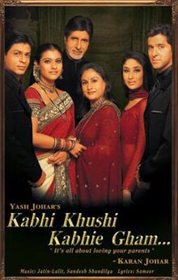
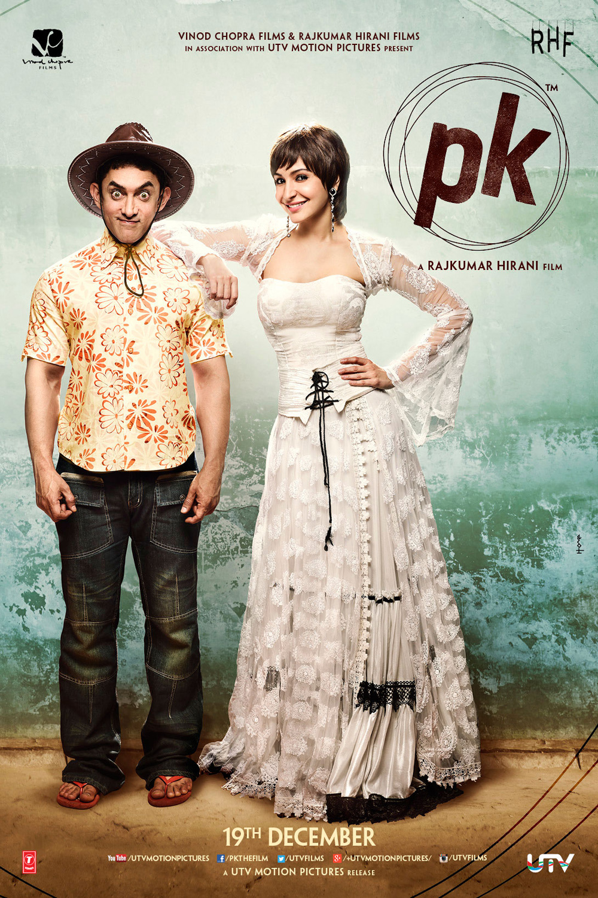
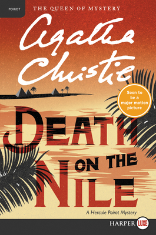
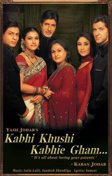
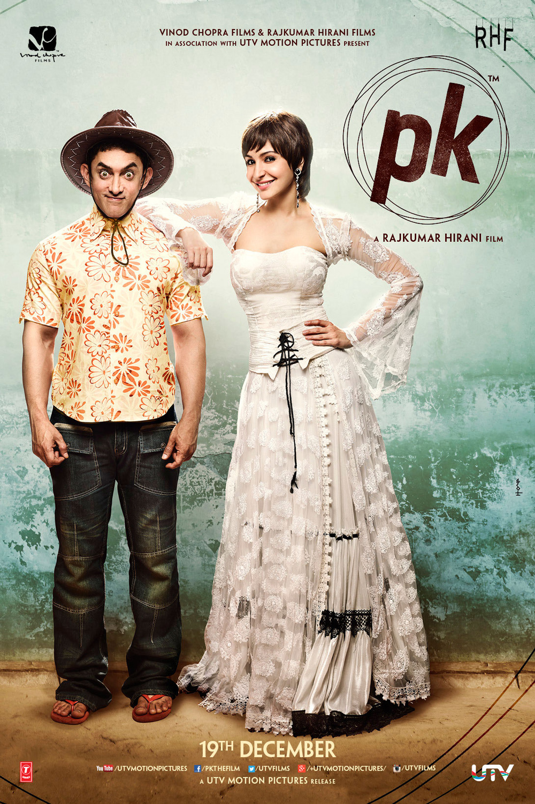
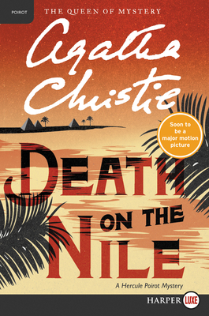

Art is at the heart of everything I do, from traditional crafts like henna, drawing, painting, and sculpting, to digital design across various platforms. I am deeply passionate about exploring different mediums and blending the tactile satisfaction of hands-on art with the creative flexibility of digital tools. Whether its creating intricate henna patterns, designing digital illustrations, or crafting one-of-a-kind pieces, my work is an expression of my diverse creative journey. I am constantly inspired by the world around me and love pushing the boundaries of whats possible, merging traditional techniques with modern technology to bring new ideas to life.


I'm a huge fan of movies, sometimes preferring them over reality because they allow me to escape, unwind, and embrace the thrill of fiction. Films have a special way of helping me let go of stress, whether it's through the grandeur of The Greatest Showman, the action-packed Marvel Spider-Man movies, or the timeless romance of Titanic. I also enjoy exploring films from all over the world, from the vibrant stories in Bollywood like Kabhi Khushi Kabhie Gham and PK, which make me feel more connected to my roots, to the gripping narratives of Hollywood. Books, too, have captured my attention, particularly the Hercule Poirot series by Agatha Christie. Together, these stories—whether on screen or in print—help me dive deep into different worlds and offer me a much-needed escape from the ordinary.

 





Abraham Lincolns quote, “Things may come to those who wait, but only the things left by those who hustle,” highlights the importance of putting in effort to achieving success, especially in a professional setting. While patience and waiting can be valuable, the quote emphasizes that those who actively pursue opportunities, work hard, and stay persistent are the ones who truly move forward in their careers. In a competitive world, success is often the result of taking initiative, adapting, and creating opportunities rather than merely waiting for them to appear. It reminds us that to thrive, we must hustle and be prepared to seize what others might overlook.
As a student, I often engage in various sports, as they help me relax and socialize with others. One of my favorite and most regularly played sports is badminton, a classic game that involves two or more players. I've been playing for a long time and enjoy the continuous improvement of my skills. Additionally, I participate in chess, which challenges me to develop my critical thinking abilities and think strategically on my feet. Both activities offer me a balance of physical and mental engagement, helping me grow in different ways.